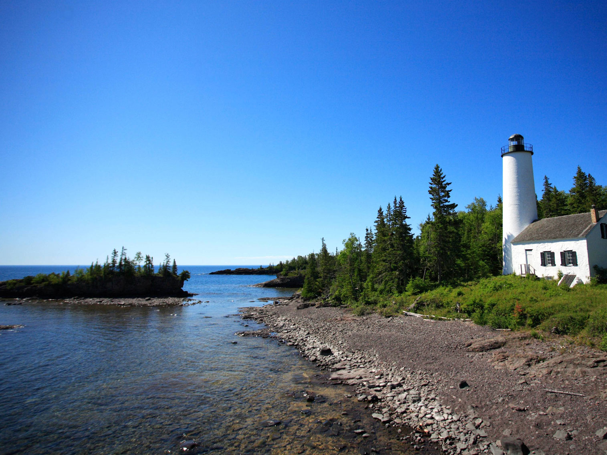
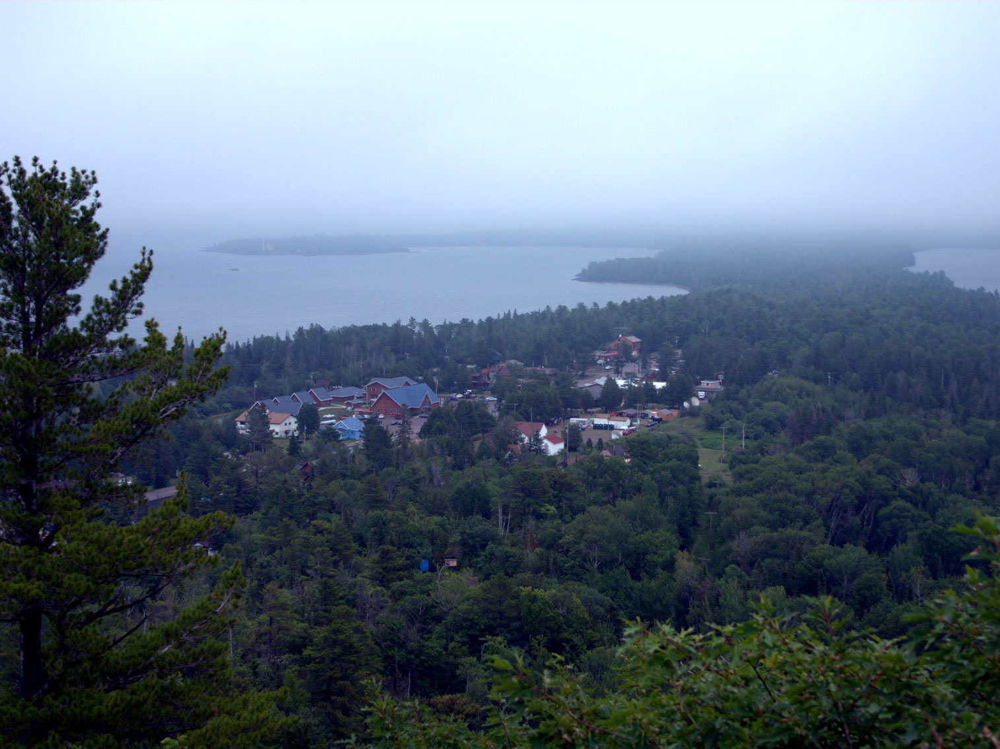
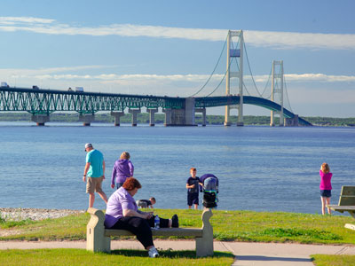
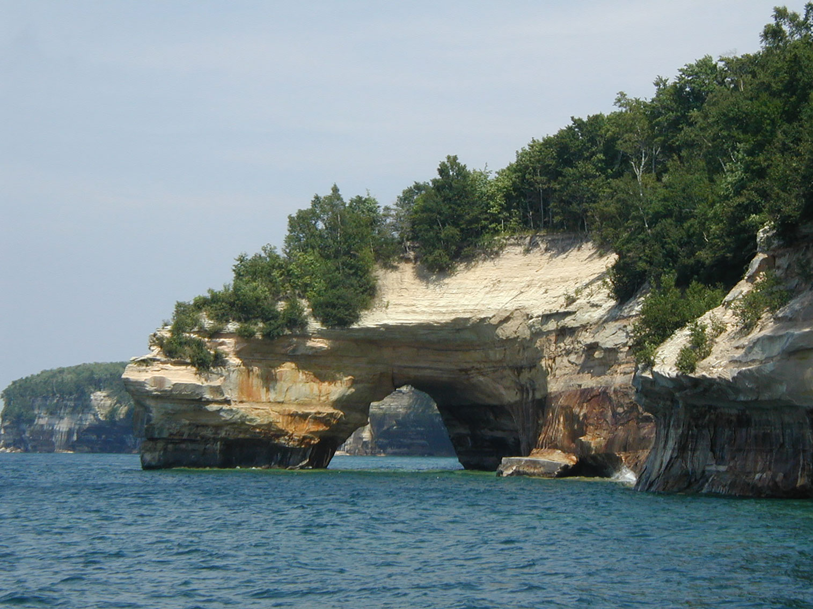
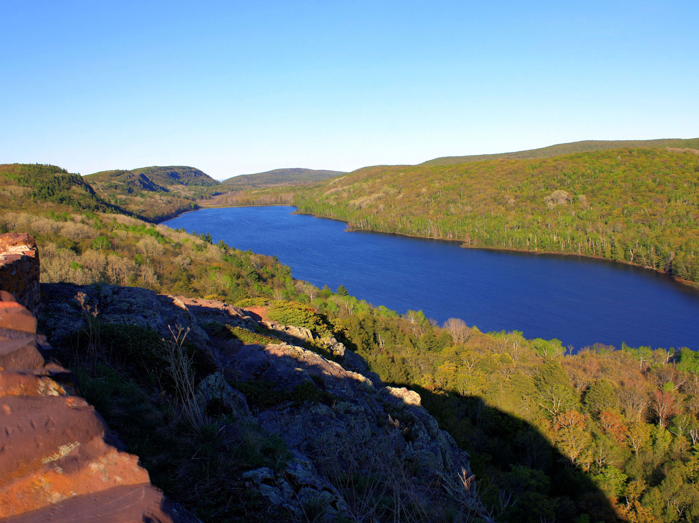
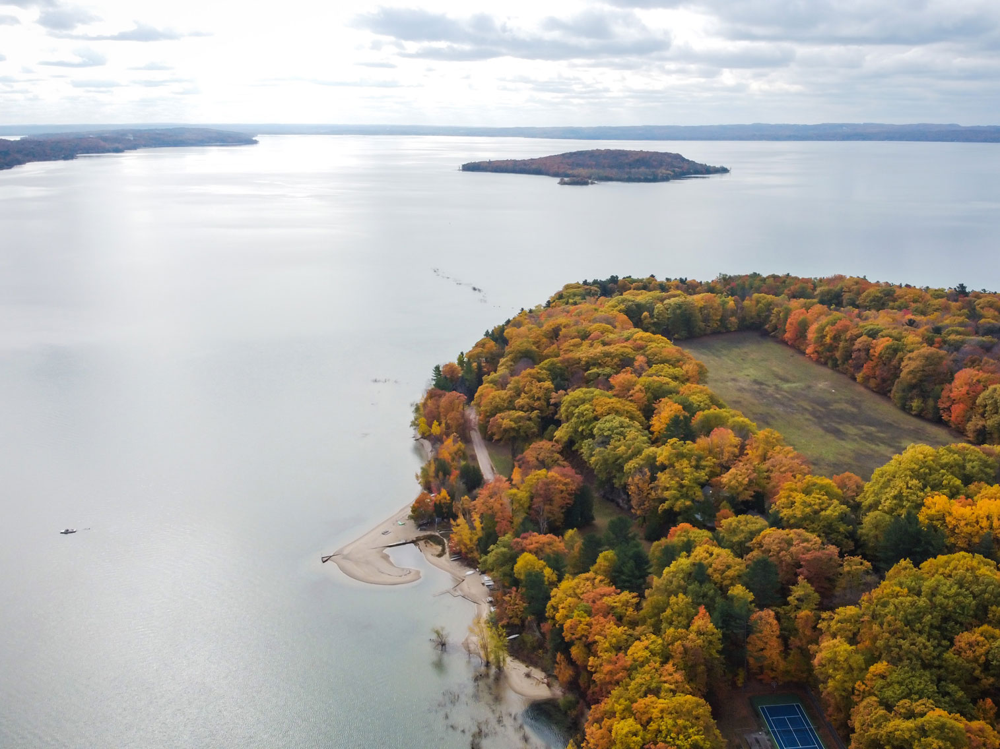

Michigan Travel Guide
Explore Michigan's Great Lakes shorelines, charming Mackinac Island, and vibrant Detroit, plus the Upper Peninsula's forests, falls, and beaches.
Top Locations


Places to See in Michigan

Rock Harbor Lighthouse
Ray Dumas, CC BY-SA 2.0, via Wikimedia Commons; Image Size Adjusted
Isle Royale National Park
National park consisting of Isle Royale, the fourth-largest lake island in the world, and more than 400 small adjacent islands, as well as the surrounding waters of Lake Superior

Brockway Mountain Drive east overlook
Russell Harrison Photography from Raleigh, NC, US, CC BY-SA 2.0, via Wikimedia Commons; Image Size Adjusted
Upper Peninsula
Region of Michigan, known for its rugged natural beauty, outdoor recreational opportunities, and unique cultural heritage
Rock Harbor Lighthouse
Ray Dumas, CC BY-SA 2.0, via Wikimedia Commons; Image Size Adjusted
Detroit
City in Michigan, known for its automotive industry and cultural attractions


Rock Harbor Lighthouse
Ray Dumas, CC BY-SA 2.0, via Wikimedia Commons; Image Size Adjusted
Holland
City in Michigan, known for its Dutch heritage and scenic beauty

Mackinac Bridge
Michael Sprague from Asheville, North Carolina, CC BY-SA 2.0, via Wikimedia Commons; Image Size Adjusted

Mackinac Bridge Area
Area surrounding the Mackinac Bridge, connecting the Upper and Lower Peninsulas of Michigan, known for its scenic beauty and recreational opportunities.

Pictured Rocks National Lakeshore arch
Chris857, CC BY-SA 3.0, via Wikimedia Commons; Image Size Adjusted

National Landmarks and Landscapes

Yinan Chen, Public Domain, via Wikimedia Commons; Image Size Adjusted

Landmarks and Landscapes

Photo by Nick Perez on Unsplash; Image Size Adjusted
Cities
Overview
Michigan is a Great Lakes state of about 10 million people, made up of two peninsulas and surrounded by four of the five Great Lakes, with more freshwater coastline than any other state. Lansing is the capital, Detroit is the largest city, and the name comes from the Ojibwe word for "large lake."
Visitors come for the beaches and dunes of the Lower Peninsula, Traverse City cherries and wineries, Mackinac Island's carriage-only streets, and the wilderness of the Upper Peninsula. Others tour Detroit's music and automobile heritage, kayak the Pictured Rocks, drive the Mackinac Bridge, or ski and snowmobile in the winter. Michigan has more than 11,000 inland lakes and 3,200 miles of Great Lakes shoreline.
Geography
Michigan consists of the mitten-shaped Lower Peninsula and the rugged Upper Peninsula, joined by the Mackinac Bridge. The Lower Peninsula is mostly flat to rolling, with forests in the north and farmland and cities in the south, and it has massive sand dunes along Lake Michigan. The Upper Peninsula is more rugged, with the Porcupine Mountains and Lake Superior's cliffs. Mount Arvon, at 1,979 feet (603 m), is the highest point, and the state has about 64,000 miles of rivers and streams.
History
The Ojibwe, Odawa, and Potawatomi were the main peoples when French explorers and missionaries arrived in the 1600s, founding Sault Ste. Marie, St. Ignace, and Detroit in 1701. Britain took over in 1763, and the United States gained the region after the Revolution. Michigan became the 26th state in 1837. Lumber, copper, and iron mining drove the 19th century, and Detroit became the center of the American automobile industry in the early 20th century, followed by Motown music in the 1960s.
Upper Peninsula
The Upper Peninsula, or "U.P.," is a rugged, sparsely populated region of forests, waterfalls, and Lake Superior shoreline that makes up about 29 percent of Michigan's land but only 3 percent of its people. Residents are called "Yoopers," and the region has a strong identity shaped by Finnish, Cornish, and French-Canadian heritage, pasties, and long winters. Pictured Rocks National Lakeshore has multicolored sandstone cliffs and sea caves along 42 miles of Lake Superior, and Porcupine Mountains Wilderness State Park has old-growth forest and the view over Lake of the Clouds. Tahquamenon Falls is among the largest waterfalls east of the Mississippi, Kitch-iti-kipi is a large, clear spring, and the Keweenaw Peninsula has copper-mining history at Keweenaw National Historical Park. Isle Royale National Park, a remote island wilderness, is reached by ferry or seaplane.
Mackinac Bridge and Mackinac Island
The five-mile Mackinac Bridge, nicknamed "Mighty Mac," connects Michigan's Lower and Upper Peninsulas across the Straits of Mackinac, where Lake Michigan meets Lake Huron. Opened in 1957, it was the longest suspension bridge between anchorages in the world at the time, and drivers cross it on I-75. On the Lower Peninsula side, Colonial Michilimackinac is a reconstructed 18th-century fur-trading fort, and Old Mackinac Point Lighthouse and McGulpin Point are historic lights. Mackinac Island, reached by ferry, bans cars and is a place of horse-drawn carriages, bicycles, fudge shops, and Victorian summer cottages. The Grand Hotel, opened in 1887, has the world's longest porch, Fort Mackinac was an important British and American fort, and Arch Rock is a natural limestone arch above the lake. Mackinac Island State Park, Michigan's first state park, covers about 80 percent of the island.
Western Michigan and the Lake Michigan Coast
Michigan's western coast along Lake Michigan is a 300-mile stretch of sandy beaches, towering dunes, lighthouses, and resort towns. Sleeping Bear Dunes National Lakeshore, once voted "the most beautiful place in America" on a national television program, has dunes rising 450 feet above the lake, and the Pierce Stocking Scenic Drive has overlooks. Traverse City is the cherry capital of the world, with the National Cherry Festival each July, wineries on the Leelanau and Old Mission Peninsulas, and beaches on Grand Traverse Bay. Farther south, Holland is a Dutch-heritage city that celebrates the Tulip Time festival each May, with Windmill Island Gardens and its 250-year-old windmill De Zwaan, Nelis' Dutch Village, and the Veldheer Tulip Gardens. Towns such as Ludington, Saugatuck, and Grand Haven have lighthouses and beaches, and Grand Rapids is the largest city in the region.
Detroit
Detroit is the largest city in Michigan and is known as the "Motor City" for its role as the birthplace of the American auto industry. Henry Ford's Model T assembly line changed the world, and visitors can learn about it at the Henry Ford Museum of American Innovation and Greenfield Village in nearby Dearborn, the Ford Piquette Avenue Plant, and the Ford Rouge Factory Tour. Detroit is also the home of Motown, and the Motown Museum in Hitsville U.S.A. tells how Berry Gordy's studio launched stars such as Stevie Wonder and the Supremes. The Detroit Institute of Arts holds Diego Rivera's famous murals, the Detroit RiverWalk runs along the Detroit River to Canada, and Belle Isle is a large island park. The Charles H. Wright Museum, Eastern Market, and Heidelberg Project add to the mix, and the city has a recovering downtown with sports teams and Art Deco architecture.
National Protected Areas
Michigan's national park sites showcase the Great Lakes. Isle Royale National Park is a remote wilderness island in Lake Superior, Pictured Rocks National Lakeshore has colorful cliffs and sea caves, and Sleeping Bear Dunes National Lakeshore has towering dunes above Lake Michigan. Grand Island National Recreation Area is a Lake Superior island with cliffs and trails. Keweenaw National Historical Park preserves the copper-mining heritage of the Upper Peninsula, and the North Country National Scenic Trail crosses the state.
State Parks and Historic Sites
Michigan has 100 state parks. Porcupine Mountains Wilderness State Park has old-growth forest and waterfalls, Tahquamenon Falls is the second-largest waterfall east of the Mississippi, and Palms Book has Kitch-iti-kipi, a large clear spring. Bond Falls is one of the best-known waterfalls in the Upper Peninsula, and historic sites include Fort Mackinac, Fort Wilkins, and the Henry Ford Museum and Greenfield Village near Detroit.
Seasons and When to Visit
Summer is the busiest season, with beaches, boating, and festivals, and the Upper Peninsula and Mackinac Island are at their best from June to September. Fall brings spectacular foliage, especially in late September and early October in the north, and cherry blossoms bloom around Traverse City in May. Winters are snowy and offer skiing, snowmobiling, and ice fishing, and the Great Lakes can bring lake-effect snow, so travelers should be prepared for changing conditions.
This article uses material from the Wikipedia article "Michigan", which is released under the Creative Commons Attribution-Share-Alike License 3.0. Additional information was drawn from National Park Service, Michigan State Parks, and Pure Michigan.